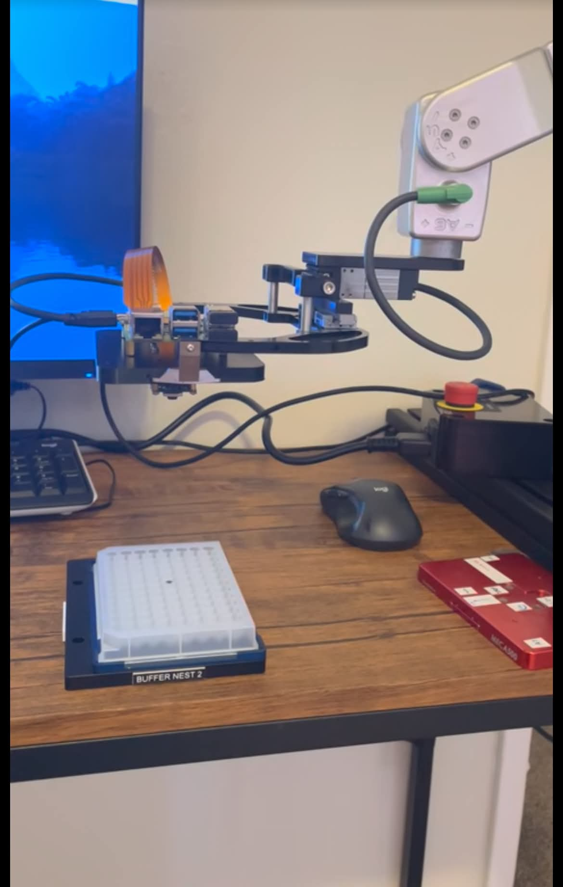

01
OpenCV Robot Camera Perception
Developed a camera-based perception system using OpenCV to detect and locate a plate, calculate its position relative to the robot, and control the robot arm to move to and grip the object.
View ProjectROBOTICS ENGINEER
Robotics engineer with 5+ years of experience designing, integrating, commissioning, and deploying robotic automation systems.
FEATURED WORK

01
Developed a camera-based perception system using OpenCV to detect and locate a plate, calculate its position relative to the robot, and control the robot arm to move to and grip the object.
View Project
02
Led integration, commissioning, FAT/SAT, and customer deployment of robotic automation systems.

03
Developed and commissioned robot trajectories using RoboDK and validated motion on physical industrial robot arms.

04
Automated networking and hardware deployment workflows, reducing deployment time by 90%.
ABOUT
I'm a Robotics Engineer with experience building and deploying autonomous robotic systems. My work spans robotics, automation, hardware integration, software, controls, networking, validation, and field deployment.
I enjoy working at the intersection of hardware and software and taking systems from an engineering concept through integration, commissioning, and production.
TECHNICAL SKILLS
Industrial Robots
Robot Commissioning
RoboDK
Motion Planning
Beckhoff TwinCAT
PLCs
Conveyors
Material Handling
Python
Git
Linux
ROS
SQL
Hardware Integration
Networking
Validation
Customer Deployment
EXPERIENCE
Robotics Engineer · 2021–Present
Designed and deployed robotic automation systems for external customers, integrating robot arms, laboratory instruments, software, controls, networking, and material handling systems.
Led system commissioning, acceptance testing, customer deployments, troubleshooting, and cross-functional engineering efforts.
GET IN TOUCH